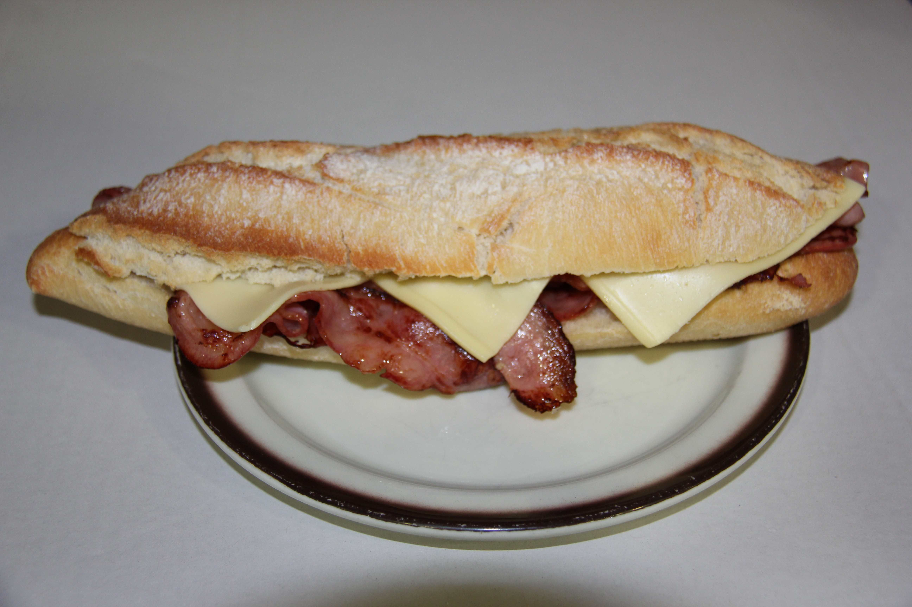

Bocadillo de The Promise
Combinaciones nunca antes vistas, sabores exóticos, y suculencia extrema crean el bocadillo perfecto. Solo aquellos afortunados presentes en el corte para bocata pueden deleitar tal manjar.

Ingredientes
- Obvio pan
- Bacon, jamón serrano, queso, pepinillos... La imaginación es tu único límite
Utensilios
- Un bocadillo The Promise
- Un horno procedente de la Forja de Hefesto
Pasos
- Consigue un puesto de trabajo en The Promise, o en su defecto un compañero de piso que tenga uno.
- Introduce el bocadillo The Promise en el horno a máxima temperatura entre 5 y 7 minutos.
- Pasado el tiempo de cocción retira el bocadillo del horno ¡cuidado que quema!
- Disfruta de una de las mejores cenas del universo.
Hasta el próximo corte para bocata camarada
Página principal